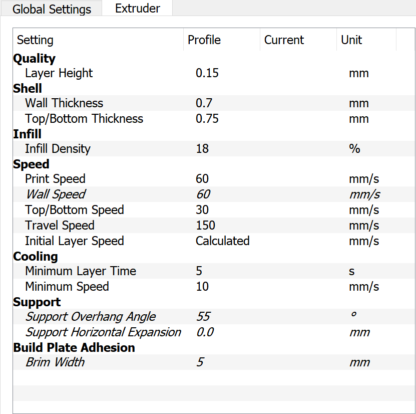

3D Printing
This page has useful information related to printing the JetBot chassis using a 3D printer. There are two methods for printing JetBot
- Print by yourself
- Use a printing service
Method 1 - Print by yourself
If you have a 3D printer, we recommend printing the JetBot components yourself!
Print facts
Below are some facts related to printing a single JetBot.
- Print time: 10-12 hours
- Material used: < 100 grams
- Material cost: ~ $2
Tested Printers
We've tested that the following printers are able to print JetBot successfully.
| Model | Cost | URL |
|---|---|---|
| Monoprice Voxel | $320 | Amazon |
| Ultimaker 2+ | $2500 | Amazon |
Tested Filaments
Based on our experience, we recommend using PLA filament when printing JetBot. Below is a collection of filaments that we have tested with the Monoprice Voxel 3D printer.
| Brand | Thickness | Material | Color | URL | Notes |
|---|---|---|---|---|---|
| AmazonBasics | 1.75mm | PLA | Silver | Amazon | Smooth, dark metallic finish |
| AmazonBasics | 1.75mm | PLA | Neon Green | Amazon | Smooth, pale finish |
| AmazonBasics | 1.75mm | PLA | Yellow | Amazon | Bold yellow, slightly translucent |
| AmazonBasics | 1.75mm | PLA | Purple | Amazon | Smooth, pale finish |
Printing and slicing configuration
-
STL unit: mm
-
Print orientation
{kind=link}
- Slice configuration (Cura)

Method 2 - Use a printing service
If you don't have a 3D printer on hand, and are not interested in purchasing one, there are external services that can print the chassis for you. Below are some quotes from popular 3D printing services
Please note, we have not tested these services yet ourselves, so please proceed with caution. If you find a print service that worked well for you, we'd love to hear! Please let us know by creating an issue on GitHub or mentioning it in the chat channel
| Service | Quote |
|---|---|
| 3DHubs | $36.66 |
| Jinxbot | $91.42 |
| Sculpteo | ~$100 |